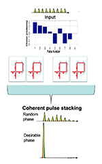
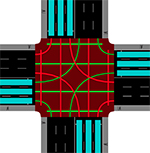

RESEARCH Project
2020

Reinforcement Learning for Coherent Pulse Stacking
Directed by Honglak Lee
Coherent Pulse Stacking (CPS) is a temporal multiplexing technique, which can stack a burst of pulses coherently into one beyond the limit of a single amplifier. CPS technique is achieved by adjusting phases of input pulses and cavity phases to combine them. In this study, we will use reinforcement learning (RL) to learn the proper phases actions strategy in this CPS system, starting from random initial phases. To our knowledge, we are the rst group to report using reinforcement learning for pulse stacking.
2019

A Dynamic Traffic Scheduling System
Directed by KANG G. SHIN
The standard traffic light system uses a fixed schedule that switches between states of different colors with fixed time. While simple and predictable, this fixed schedule does not fully utilize the crossroad and often impose unnecessary wait time on vehicles and pedestrians. In this paper, we introduce a new traffic light scheduling scheme that dynamically schedules all the traffic lights at a crossroad based on the amount of traffic in all directions. Our scheduling scheme aims to minimize the average wait time of both vehicles and pedestrians while ensuring fairness between them at the same time. Our experiments show that, for different traffic situations, our dynamic traffic light scheduling scheme consistently achieves significant improvement on the average wait time of traffic and the utilization of a crossroad.
2019
Deep Learning for Computer Vision
Directed by Justin Johnson
This is a collection of homework of the class, Deep Learning for Computer Vision. This course is about details of neural-network based deep learning methods for computer vision. During this course, I learn to implement, train and debug their own neural networks with Pytorch and gain a detailed understanding of cutting-edge research in computer vision. The course covers learning algorithms, neural network architectures, and practical engineering tricks for training and fine-tuning networks for visual recognition tasks. I implement some famous algorithms, including style transfer, object detection, reinforcement learning and GAN.
2019
Totem of WHU--Family tree management system
Directed by Rongrong Li
This project is my graduation project, relying on Totem of WHU Laboratory of Wuhan University. This system can operate on family tree files, including, entry, query, visualization and other operations. To develop this system, I use the Java web mainly. The background framework is SSH (struts+spring+hibernate). The front-end framework includes but is not limited to Bootstrap. And I use postgresql to manage database.
2018
Feedie--Feeding Robot
Directed by Guang-Zhong Yang
This work was completed by me and my team members when I participated in summer camp in Imperial College London. The robot can identify the location of bread and water on a table and use different strategies to put it to the controller's mouth. We develop the system with python in PC, Arduino 101, a camera, which can receive audio and a mechanical arm. In the end, we get the first prize in the final evaluation and obtained the certification materials from Imperial College, London.
2018

Hello Air
Directed by Jianhui Zhao
HelloAir through the present popular LBS + AR + augmented reality (location-based services) technology, real-time computing camera position and Angle of image, and combined with the user of the virtual dynamic information 3D rendering, users have the ability to browse at any time and place in the surrounding environment, and will be released dynamically in real space anywhere, in short, in this way, the user can real time and space of information interaction, to construct a highly social networks on geographical position.
2017
A gesture recognition software based on Leap Motion
Directed by Teng Fei
The humanization and intuitionization of three-dimensional gesture recognition make human-computer interaction more simple and understandable, so a gesture recognition technology based on Leap Motion is proposed and applied to smart home system. To achieve to quickly identify gestures, the basis of the principle of binocular stereo imaging recognition and tracking of hand feature points, the signal compression on the time sequence as the feature vector, via feature point location, direction, or motion to gesture recognition properties to match the predefined gesture, and then through the socket network data communication transfer gesture recognition results generated by the command to the smart furniture, complete control of the furniture. The study successfully realized the gesture recognition control simulation intelligent lamps.
2016
Heaven Street WHU
Directed by Teng Fei
Panoramic navigation map software - Luojia Street, set maps, VR, 3d panorama and Luojia scenery in one. The software realizes 360-degree panoramic rotation to watch pictures, play panoramic videos, tour 3d models and other functions. As long as users turn their heads and stare at the destination they want to go, they can overlook the earth from high altitude and enjoy the beautiful Campus of Wuhan University from the "God's perspective" for panoramic tour. In addition, users can interact with the software in a variety of ways, and can listen to the voice navigation to complete the multi-motion tour. The software system provides both macro and micro geographic information data, allowing users to view the overall situation from an aerial perspective and to browse deep information in a location. This software connects the virtual electronic map with the real world and breaks through the service mode in the GIS field.